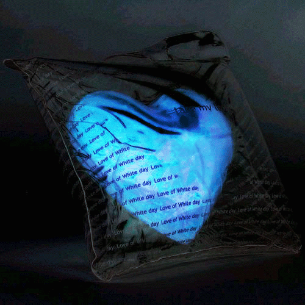

【原创】当指尖再次划过冰冷的键盘。。。下一次我的枪更准。。。
夜，已经很深了= = 耳机里一遍遍单曲循环着背景音乐，屏幕的光照在脸上，有些刺眼。突然想起以前一起在空间踩堂、互留悄悄话的日子，如今那些亮起的头像，终究还是暗了下去。是不是所有的青春，最后都会变成一段无法言说的回忆？w(ﾟДﾟ)ww(ﾟДﾟ)ww(ﾟДﾟ)ww(ﾟДﾟ)ww(ﾟДﾟ)w
当最后一枚电子在深夜冷凝，我们在代码的荒原里编织不存在的浪漫...........
网名：下雨天
今天空间花藤状态：🌻 盛开

LOVE
夜，已经很深了= = 耳机里一遍遍单曲循环着背景音乐，屏幕的光照在脸上，有些刺眼。突然想起以前一起在空间踩堂、互留悄悄话的日子，如今那些亮起的头像，终究还是暗了下去。是不是所有的青春，最后都会变成一段无法言说的回忆？w(ﾟДﾟ)ww(ﾟДﾟ)ww(ﾟДﾟ)ww(ﾟДﾟ)ww(ﾟДﾟ)w
[好友] 神马都是浮云： 过来踩空间啦！记得回踩哦，最近过得怎么样？